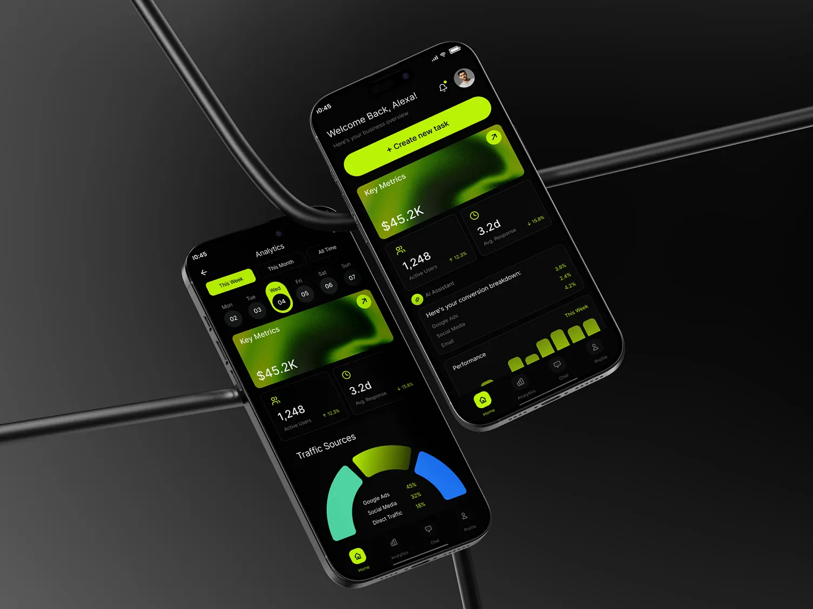

A food delivery app designed for
seamless, delightful ordering.
Delicut is a food delivery application built around the idea that healthy eating should feel effortless. The brief was to design an experience as fresh as the food itself — clear, fast, and satisfying from the first tap to the final bite.
